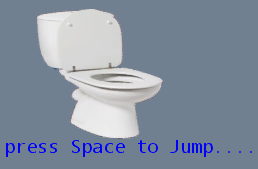

Toilet Trouble 2

Jump the pesky toilet on platforms to gain more points. Avoid the missile!
Downloads
Drop the folder from the zip file wherever you want.
It may have a virus warning. I promise the turbo toilet technology is not malicious in any way at all.
If you think it's suspicious, don't download it. I don't know why .NET 4.0 programs get flagged as dubious.
You need the Microsoft XNA Framework installed to play Toilet Trouble.